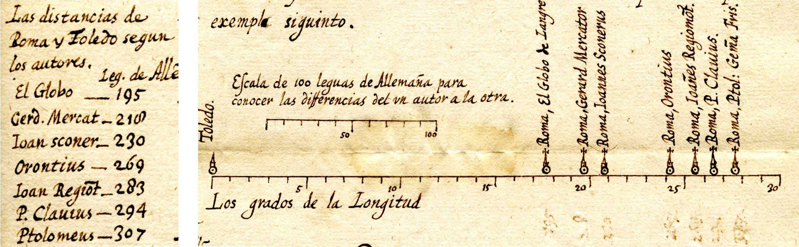
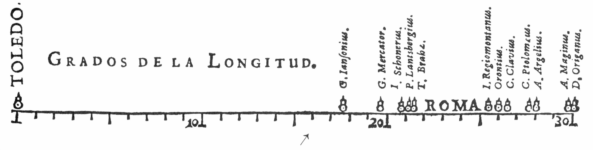
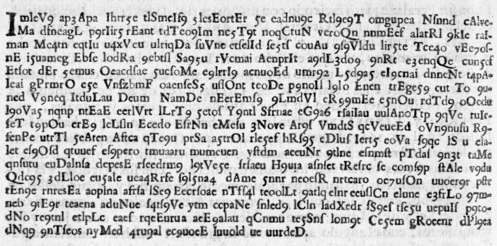
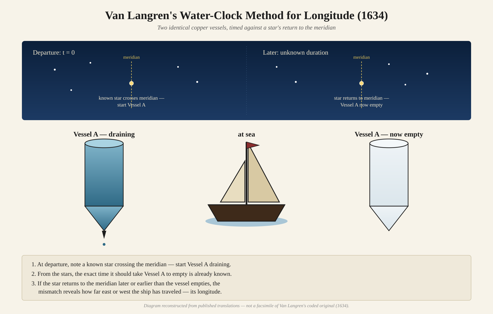

393 years after van Langren encoded it, an amateur codebreaker gave an answer I never thought to look for
Author
Michael Friendly
Published
July 17, 2026
Historians of data visualization live for surprises. Sometimes they’re delightful: an unknown fact about a hero of the field, like C. J. Minard’s burial place in Montparnasse Cemetery and that his near neighbor there is Andre-Michel Guerry as told in Raiders of the Lost Tombs. Or a hero nobody had noticed yet, like the Hungarian cartographer Imre Milecz, discovered by Attila Bátorfy to have drawn the first flow map in 1773—decades before the credit usually goes to Minard or Henry Harnass, or Frances Harriet Lightfoot, whose 1831 An Embellished Chart of General History and Chronology had gone essentially unknown to modern researchers until RJ Andrews found it.
Sometimes these surprises are more unsettling. The worst is the discovery that we got some piece of the historical record entirely wrong. Van Langren’s Secret, for an accurate method of determining longitude at sea, is a surprise of the second kind. Yet, to an amateur historian like myself, telling the story of the surprise itself has a certain reward. It is not just a matter of correcting the record; more that of an appreciation of how our understanding of history continues to unfold. Perhaps paradoxically, history is not static. History is always undergoing reexamination and reconsideration as new facts or perspectives arise.
How I Got Here
In 2009 I received an out-of-the-blue email from Joaquín Ibáñez Ulargui, a materials scientist in Madrid, who had been going through the papers of an ancestor—fray Íñigo de Brizuela, President of the Council of Flanders in the 1620s. He had found something odd tucked among them: a letter, undated, in old Spanish, containing a small graph and wondered if I was interested.
The graph showed seven names, a scale of degrees, a scatter of estimates for the distance in longitude between Toledo and Rome. It looked very much like the famous 1644 diagram in Michael Florent van Langren’s La Verdadera Longitud por Mar y Tierra—except this letter predated that publication by at least sixteen years. The amateur historical sleuth in me was energized!

The graph from the undated 1628 letter: seven authorities’ estimates of the longitude difference between Toledo and Rome, plotted against a scale of degrees.
That email was the seed of a paper Pedro Valero-Mora, Joaquín, and I published in 2010 in The American Statistician: “The First (Known) Statistical Graph: Michael Florent van Langren and the ‘Secret’ of Longitude.”. What was particularly of interest was to understand why van Langren chose to display the previous estimates of the longitude distance from Toledo to Rome in what would be the first graphical display of quantitative data, rather than a simple table, which was nearly always used at the time.
Our conclusion was that only a one-dimensional line plot of the estimates would show directly what he wanted the King to see: all previous methods were so variable, and therefore with such large errors, as to be useless for accurate navigation at sea. In the version of this graph from 1644, You can see how wide the range of estimates is: nearly 40% of the range from Toledo to Rome shown. The arrow underneath marks the actual distance, 16^o31’.

van Langren’s 1644 graph.
We traced van Langren’s graph back to its origin in this 1628 patronage letter, sent to Isabella Clara Eugenia, governor of the Spanish Netherlands. van Langren laid out, with more salesmanship than science, the case that longitude determination was a mess, and King Fillipe of Spain surely needed to solve this for exploration (and plunder!). He said boldly that he, Michael Florent van Langren, descendant of great Dutch globe-makers and mathematician to His Majesty, had found a solution.
He never said what the fix was. In La Verdadera, on page 8, he printed his idea anyway—but in cipher. He told the king he’d reveal the plaintext after suitable compensation. This was a classic request for patronage, but couched as a puzzle. We reproduced the ciphertext in our supplementary materials, posed a few open questions about what kind of cipher it might be, and moved on.
Except I didn’t quite move on right away. In 2009 and 2010 I went looking for codebreakers on what the internet was back then, tracking down a handful of people—a few retired from the CIA, a couple from NASA—who I thought might enjoy a fun historical puzzle. Several wrote back, and a few actually gave it a real attempt. Van Langren beat every one of them. (We’ll see why when we get to the final solution.)

Page 8 of La Verdadera Longitud por Mar y Tierra (1644): the printed cipher, exactly as van Langren’s readers first saw it.
Here it is in full, exactly as transcribed from page 8—the thing everyone, including me, walked past for a decade:
Two hundred and four of those space-separated groups, every one of them four to eight characters long, no group repeating often enough to be a common word in any language. Take a minute and look at it before reading on—this is exactly what stared back at van Langren’s readers for 376 years.
I assumed, as I think most people who have written about van Langren have assumed, that whatever he was hiding had something to do with the achievement he’s actually remembered for: his 1645 lunar map, the first comprehensive survey of the moon’s craters and mountains, and the method he spent years trying to build around it—using the sunrise and sunset lines crossing named lunar peaks as a kind of celestial clock, visible everywhere the moon was visible.
It was a reasonable guess, backed by details about the Alfonsine Tables which provided data for computing the position of the Sun, Moon and planets relative to the fixed stars. But it was also wrong.
The Cipher Falls
Eleven years after our paper—long enough that I had filed the cryptogram away as one of those historical loose ends nobody would ever tie off—I learned that it had been solved. Not by a historian of science. By a Belgian warehouse worker and amateur cryptographer.
The backstory has its own small comedy of persistence. Klaus Schmeh, a German cryptology writer who maintains a blog called Cipherbrain, had stumbled on the van Langren cipher in 2015 and flagged it as a genuinely interesting unsolved historical cryptogram that nobody in the crypto world seemed to know about. An Antwerp amateur astronomer, Jos Pauwels, took an interest and kept it alive. Dirk Huylebrouck, a mathematician at KU Leuven, had been shopping the puzzle around online forums for the better part of a decade, by his own account without success.
Then, in December 2020, a trio of codebreakers—David Oranchak, Sam Blake, and a Fleming named Jarl Van Eycke—cracked the Zodiac Killer’s notorious Z340 cipher, unsolved for 51 years. Huylebrouck read the news, tracked down Van Eycke, and handed him the Code of Langren.
Van Eycke solved it in about a week.
His approach was pure applied cryptanalysis, and it’s worth walking through because it’s a small master class in how you break a cipher with no known key and no certainty about what kind of cipher it even is. He started by noticing that the “words” in the transcribed ciphertext were suspiciously uniform in length—a giveaway that the spacing was cosmetic, meant to look like word breaks without being any. He stripped the spaces and ran statistical tests for periodic transposition, the classic technique of simply reordering letters rather than substituting them. Nothing. He then tried removing different classes of symbols to see what improved the letter-trigram statistics, and found that the capital letters scattered through the text were pure decoys—meaningless once removed. With capitals and spaces both gone, he tried reading the remaining letters at different intervals, and found that taking every third letter suddenly produced recognizable fragments of real words.
That was the structural key: the plaintext had been split across three interleaved streams before a final substitution—digits standing in for letters—was layered on top. Once he had the interleaving and the substitution, the message resolved into continuous prose. And the prose wasn’t in the Spanish that both van Langren’s introduction and our own paper had led everyone to expect. It was seventeenth-century French. Quelle surprise! It is of some interest to show some of these steps using R.
A quick note on sourcing before I reproduce any of this: Van Eycke never published his own account of the break. Every version of this story, including mine, traces back to Klaus Schmeh’s Cipherbrain post, which is Schmeh’s own paraphrase of “a detailed description” Van Eycke sent him by email—not a verbatim quote, and not self-published. With that caveat, here’s what happens when you run Van Eycke’s described steps against the actual ciphertext from our 2010 supplementary materials.
204 “words,” and the lengths cluster almost entirely between 4 and 8 characters—far too tight a spread for genuine word boundaries in any European language. That’s the tell that the spacing in the printed cipher is cosmetic.
Removing the capital letters scattered through the text (they carry no information—Van Eycke found they were pure noise) leaves a single unbroken run of lowercase letters, long-s (ſ), and digits.
Step 3: split into three interleaved streams
chars <-strsplit(nocaps, "")[[1]]n <-length(chars)stream1 <-paste(chars[seq(1, n, by =3)], collapse ="")stream2 <-paste(chars[seq(2, n, by =3)], collapse ="")stream3 <-paste(chars[seq(3, n, by =3)], collapse ="")substr(stream1, 1, 60)
Taking every third character—positions 1, 4, 7, …—out of that run produces stream1 above. It’s still not readable, but the letter patterns already look far more like language than the raw ciphertext did.
Step 4: undo the digit substitution
The last layer is a simple key: 1 = a, 2 = b, … 9 = i. Concatenate the three streams in order and substitute:
plain_raw <-paste0(stream1, stream2, stream3)digit_map <-setNames(letters[1:9], as.character(1:9))plain_chars <-strsplit(plain_raw, "")[[1]]subbed <-vapply(plain_chars, function(ch) {if (ch %in%names(digit_map)) digit_map[[ch]] else ch}, character(1))plain_final <-gsub("ſ", "s", paste(subbed, collapse =""))# an excerpt further into the message, not the very startexcerpt <-substr(plain_final, 533, 940)for (s inseq(1, nchar(excerpt), by =68)) {cat(substr(excerpt, s, min(s +67, nchar(excerpt))), "\n")}
Even with the word breaks still missing and a rough patch or two (likely a transcription slip somewhere in the 2010 cipher.txt, fifteen years old at this point), real seventeenth-century French is unmistakably there: estoilles (stars), meridon [méridien], and then—right on cue—…florenc[ius] ouan langren dict qu’on faira deux uises de cuiure de semblable c[a]pacite en forme de celindre…—“Florentius van Langren says one shall make two vessels of copper of similar capacity in the form of a cylinder.” That’s the same instruction already quoted in English translation above, arriving from the other direction, out of a 380-year-old jumble of letters and digits.
What He Was Actually Hiding
The plaintext, once unwound, turns out to describe not a lunar method at all, but a water clock:
Make two cylindrical copper vessels of equal capacity, each with a conical point at the bottom and a small hole at the center of that point. Fill them with seawater and let them drain. At departure, start the first vessel running while noting which known star sits on the meridian. That vessel will run empty in exactly 24 hours of sidereal time—the interval for a star to return to the same meridian. The moment the first vessel empties, start the second. Do this daily throughout the voyage. Each time a vessel empties, compare the position of the reference star against the meridian to read off how many degrees of longitude have been traveled from the port of departure. A small cork float, riding on the water inside, marks the level so the moment of emptying can be seen precisely.
It’s a genuinely clever idea—use the fixed 24-hour sidereal rotation of the stars as an external check on a mechanical timer, rather than trying to keep time some other way and then comparing it to solar noon. But it’s built on the oldest timekeeping technology available to him, and that, I think, is exactly why nobody guessed it. Van Langren is remembered—by me among others—for looking up, at the moon. It turns out that at least one of his “secrets” had him looking at a copper cone and a dripping hole, a technology already two thousand years old when he was born.
Here is a visual depiction of what van Langren was thinking:

A Digression on Water and Time
The clepsydra—Greek for “water thief”—is one of the oldest instruments humans built for a purpose other than agriculture or shelter. The earliest known example comes from the tomb of Amenhotep I in Egypt, around 1500 BCE; water clocks appear independently in China at roughly the same remove. The basic principle never changed across three millennia: water drains from, or fills, a graduated vessel at a controlled rate, and the level tells you how much time has passed.
What did change was the engineering. Ctesibius of Alexandria, in the third century BCE, added a second catch-vessel and a float mechanism, and eventually gears and a waterwheel to correct for the fact that Greek “hours” were a twelfth of daylight and therefore changed length with the seasons. Roman magistrates used clepsydras to time court speeches; ancient Greek naval crews used them to mark watch rotations at sea—so van Langren, whatever else he was doing, was not innovating the application, only the specific protocol. Chinese engineers under the Song dynasty built cascading, multi-stage clepsydras accurate enough to drive astronomical demonstration devices. The Han-dynasty court astronomer Huan Tan was already writing, two thousand years before van Langren, about how temperature affected the flow rate of water clocks and threw off their accuracy against a sundial.
That last detail matters, because it was already the known Achilles’ heel of the technology, and it is compounded at sea by something no clepsydra maker on dry land ever had to solve: motion. A ship pitching in a swell does not let water drain at a controlled, predictable rate through a fixed orifice. Van Langren’s copper cones, however precisely matched at the maker’s bench, would have drifted out of agreement with each other and with the stars within days, for reasons no amount of careful calibration in a Brussels workshop could fix. It is a method that works beautifully at a desk and fails exactly where it needed to succeed.
Van Langren wrote his cipher in the early 1630s. Christiaan Huygens would not patent the pendulum clock—the device that finally offered land-based timekeeping precise enough to matter—until 1656, and an accurate marine chronometer was still more than a century away, awaiting John Harrison. At the moment van Langren guarded his secret, the water clock was not an anachronism. It was still, in a sense, the state of the art in a world without anything better. He just happened to be trying to make it do a job—hold time steady on a heaving ship for weeks—that nothing built before the eighteenth century could actually do.
Every Cipher Tells a Story
I keep coming back to the epigraph we used to open the 2010 paper, borrowed a little irreverently from Rod Stewart: every picture tells a story. It turns out the same is true of every cipher, and this one told two stories at once. The first is about van Langren himself—a man who staked years of court patronage on a secret that turned out to be an old idea applied to an impossible environment, and who is, with some justice, remembered instead for the achievement he didn’t encrypt: the first comprehensive map of the moon.
The second story is about the people who finally read it. Not a professional historian of science, not a specialist in seventeenth-century cryptography, but a chain of amateurs and one extraordinarily talented codebreaker: an astronomy hobbyist who wouldn’t let the puzzle drop, a mathematician who spent a decade asking strangers on forums for help, and a warehouse worker in Flanders who had, a few weeks earlier, helped unmask a serial killer. Joaquín’s ancestor’s papers gave us the graph’s true origin in 2009. Jarl Van Eycke’s week of work gave us, in 2021, the thing van Langren had been most careful to hide, and the thing I, writing about him in the year between, never thought to go looking for.